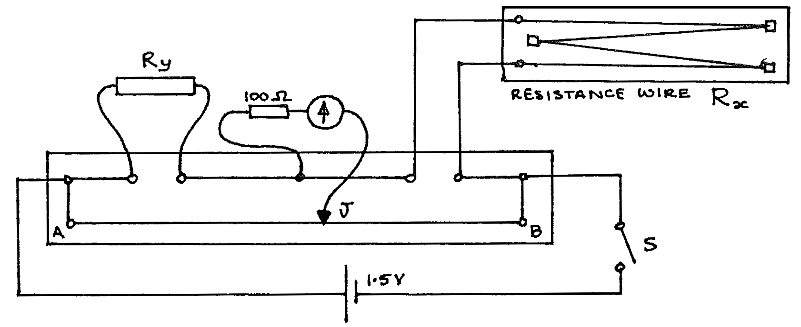

F2-4: Determination of the Resistivity of the Material of a Wire¶
Apparatus¶
Metre bridge board; resistance wire board (\(R_x\) - may include wires of several materials); galvanometer with \(100\Omega\) protection resistor; resistor \(R_y\) of \(10\Omega\); \(1.5\text{V}\) cell; switch; micrometer screw gauge; jockey (J); connecting leads (3 long, 5 short).

Procedure¶
- Set up the apparatus as above.
- Close S, and place J at the \(50\text{cm}\) mark. Move J until the galvanometer reads zero. Record the length \(\overline{AJ}\). Open S.
- Measure the length of \(R_x\). Very gently lift the wire \(R_x\) and measure its diameter in 5 different positions.
- If there are wires of other materials, repeat procedure steps 2 and 3 for these wires.
Observations¶
For each wire
Wire description: ________
\(\overline{AJ}=\) ________ cm;
\(\overline{JB}=\) ________ cm;
\(R_y =\) ________ \(\Omega\);
Length \(L\) of wire R= ________ m
Diameter of wire R:
\(d_1=\) ________ mm;
\(d_2=\) ________ mm;
\(d_3=\) ________ mm;
\(d_4=\) ________ mm;
\(d_5=\) ________ mm;
Average value of \(d =\) ________ mm.
Theory¶
This circuit is a Wheatstone Bridge. Thus \(\frac{\overline{AJ}}{\overline{JB}} = \frac{R_y}{R_x}\) and \(R_x\) can be found.
Now \(\rho\) is the resistivity of the material of the wire, and \(\rho = \frac{R A}{L}\). Where here \(R = R_x\ \) , \(A = \big( \text{cross-sectional area of wire } R_x\big)\), and \(L = \big(\text{length of } R_x\big)\).
Analysis¶
- Use the theory to find \(\rho\) of the material of each type of wire tested.
- Find a table that shows the resistivity of many types of wire and try to deduce the type of material of each wire. Calculate the % error in each of your results.
- Choose a suitable material or materials, giving reasons, for the
construction of the following:
- a fixed resistor of \(10000 \Omega\)
- a variable resistor of \(5 \Omega\)
- a lamp filament
- a thermistor
- a junction diode
- a connecting wire
- a long-distance power cable in a National Grid
- a lightning conductor.